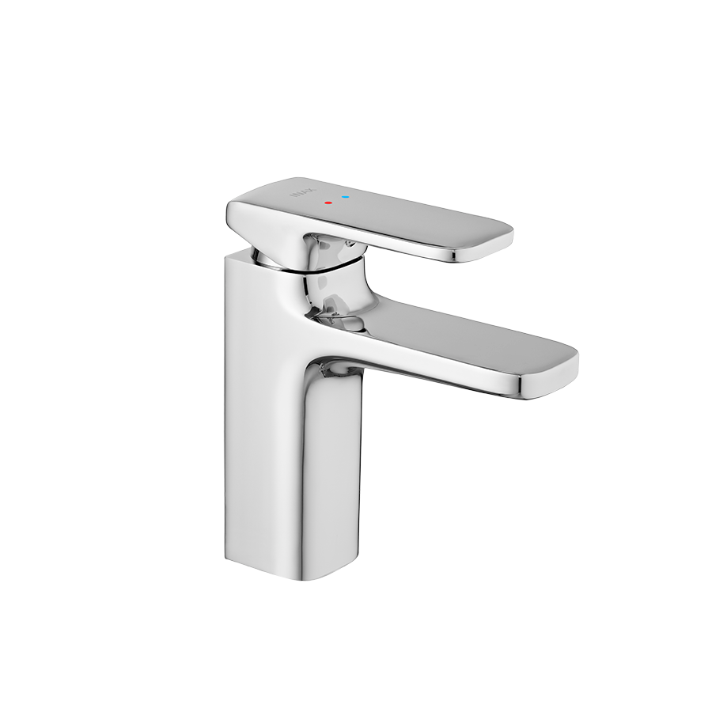
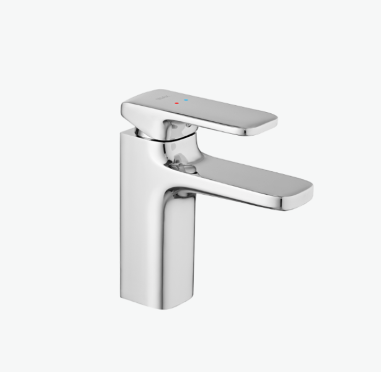
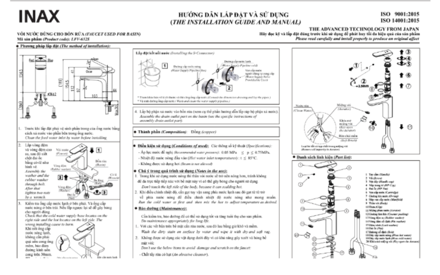

Nếu bạn đang tìm kiếm sen vòi đơn giản nhưng vẫn đảm bảo về chất lượng và độ bền thì sen vòi đơn LFV-632S là lựa chọn lý tưởng.Thiết kế sen vòi đơn LFV-632S có tính ứng dụng caoSen vòi đơn LFV-632S sở hữu một thiết kế mang tính ứng dụng cao, trơn tru và dễ sử dụng. Kiểu dáng sản phẩm đơn giản, thanh lịch giúp sản phẩm dễ dàng hài hòa với mọi phong cách thiết kế phòng tắm.LFV-632S có thiết kế tay gạt hoặc núm điều khiển được tối ưu hóa để người dùng có thể thao tác nhẹ nhàng và chính xác khi điều chỉnh lưu lượng nước. Bên cạnh đó, sự trơn tru trong thiết kế tổng thể cũng giúp bề mặt sen vòi dễ dàng vệ sinh, hạn chế tối đa việc tích tụ cặn bẩn và vi khuẩn.Chất liệu cao cấpChất lượng của vòi gật gù nóng lạnh INAX LFV-632S được khẳng định qua việc sử dụng các vật liệu và linh kiện cao cấp, đảm bảo tuổi thọ sản phẩm lâu dài:Lớp mạ Crom-Niken cao cấp: Toàn bộ thân sen vòi được bao phủ bằng lớp mạ Crom-Niken dày dặn. Lớp mạ này không chỉ mang lại độ sáng bóng nổi bật, làm tăng vẻ sang trọng cho sản phẩm, mà còn là lớp bảo vệ vững chắc, giúp sen vòi chống lại sự ăn mòn và oxy hóa hiệu quả. Nhờ đó, LFV-632S luôn giữ được vẻ đẹp như mới trong môi trường phòng tắm ẩm ướt.Van sứ chống rò rỉ tuyệt đối: Điểm mấu chốt tạo nên sự tin cậy của sản phẩm là van điều khiển bằng sứ chất lượng cao. Van sứ có độ bền cao vượt trội và khả năng chống mài mòn tuyệt vời. Cấu tạo kín khít này đảm bảo sen vòi chống rò rỉ nước hiệu quả dưới mọi áp lực, loại bỏ hoàn toàn tình trạng nhỏ giọt gây lãng phí và khó chịu.Nhìn chung, sen vòi đơn LFV-632S là sự lựa chọn thông minh cho những ai đề cao chất lượng và độ bền bỉ trong từng chi tiết. Sản phẩm này phù hợp với lavabo và sen tắm, mang lại sự ổn định và tiện nghi dài lâu, xứng đáng với sự tin cậy của thương hiệu INAX.Lưu ý khi lắp đặt: Sản phẩm chưa bao gồm ống xả thải. Vui lòng chuẩn bị thêm phụ kiện này để hoàn thiện hệ thống lắp đặt.Mọi thắc mắc hoặc cần hỗ trợ về sản phẩm và bảo hành, vui lòng liên hệ Hotline tư vấn và bảo hành: 18006633.Hướng dẫn lắp đặt sen vòi đơn LFV-632SXem thêm file hướng dẫn: UM-0201_LFV-632S_V3_2021.03.15.pdfThông số kỹ thuậtTên sản phẩmSen vòi đơn LFV-632SChất liệuMạ Crom-NikenKích thước-Đặc điểm- Van điều khiển bằng sứ có độ bền cao, chống rò rỉ nước - Trơn tru, dễ sử dụngThương hiệuINAXKhác- Sản phẩm chưa bao gồm ống xả thải - Hotline tư vấn và bảo hành: 18006633
Sen vòi đơn LFV-632S
Vòi chậu thương hiệu INAX.
Đã cập nhật danh sách yêu thích.
DANH MỤC: Vòi chậu
MÃ SẢN PHẨM: LFV-632S
DEPTH: mm
HEIGHT: mm
WIDTH: mm
Nếu bạn đang tìm kiếm sen vòi đơn giản nhưng vẫn đảm bảo về chất lượng và độ bền thì sen vòi đơn LFV-632S là lựa chọn lý tưởng.Thiết kế sen vòi đơn LFV-632S có tính ứng dụng caoSen vòi đơn LFV-632S sở hữu một thiết kế mang tính ứng dụng cao, trơn tru và dễ sử dụng. Kiểu dáng sản phẩm đơn giản, thanh lịch giúp sản phẩm dễ dàng hài hòa với mọi phong cách thiết kế phòng tắm.LFV-632S có thiết kế tay gạt hoặc núm điều khiển được tối ưu hóa để người dùng có thể thao tác nhẹ nhàng và chính xác khi điều chỉnh lưu lượng nước. Bên cạnh đó, sự trơn tru trong thiết kế tổng thể cũng giúp bề mặt sen vòi dễ dàng vệ sinh, hạn chế tối đa việc tích tụ cặn bẩn và vi khuẩn.Chất liệu cao cấpChất lượng của vòi gật gù nóng lạnh INAX LFV-632S được khẳng định qua việc sử dụng các vật liệu và linh kiện cao cấp, đảm bảo tuổi thọ sản phẩm lâu dài:Lớp mạ Crom-Niken cao cấp: Toàn bộ thân sen vòi được bao phủ bằng lớp mạ Crom-Niken dày dặn. Lớp mạ này không chỉ mang lại độ sáng bóng nổi bật, làm tăng vẻ sang trọng cho sản phẩm, mà còn là lớp bảo vệ vững chắc, giúp sen vòi chống lại sự ăn mòn và oxy hóa hiệu quả. Nhờ đó, LFV-632S luôn giữ được vẻ đẹp như mới trong môi trường phòng tắm ẩm ướt.Van sứ chống rò rỉ tuyệt đối: Điểm mấu chốt tạo nên sự tin cậy của sản phẩm là van điều khiển bằng sứ chất lượng cao. Van sứ có độ bền cao vượt trội và khả năng chống mài mòn tuyệt vời. Cấu tạo kín khít này đảm bảo sen vòi chống rò rỉ nước hiệu quả dưới mọi áp lực, loại bỏ hoàn toàn tình trạng nhỏ giọt gây lãng phí và khó chịu.Nhìn chung, sen vòi đơn LFV-632S là sự lựa chọn thông minh cho những ai đề cao chất lượng và độ bền bỉ trong từng chi tiết. Sản phẩm này phù hợp với lavabo và sen tắm, mang lại sự ổn định và tiện nghi dài lâu, xứng đáng với sự tin cậy của thương hiệu INAX.Lưu ý khi lắp đặt: Sản phẩm chưa bao gồm ống xả thải. Vui lòng chuẩn bị thêm phụ kiện này để hoàn thiện hệ thống lắp đặt.Mọi thắc mắc hoặc cần hỗ trợ về sản phẩm và bảo hành, vui lòng liên hệ Hotline tư vấn và bảo hành: 18006633.Hướng dẫn lắp đặt sen vòi đơn LFV-632SXem thêm file hướng dẫn: UM-0201_LFV-632S_V3_2021.03.15.pdfThông số kỹ thuậtTên sản phẩmSen vòi đơn LFV-632SChất liệuMạ Crom-NikenKích thước-Đặc điểm- Van điều khiển bằng sứ có độ bền cao, chống rò rỉ nước - Trơn tru, dễ sử dụngThương hiệuINAXKhác- Sản phẩm chưa bao gồm ống xả thải - Hotline tư vấn và bảo hành: 18006633
DANH MỤC: Vòi chậu
MÃ SẢN PHẨM: LFV-632S
DEPTH: mm
HEIGHT: mm
WIDTH: mm